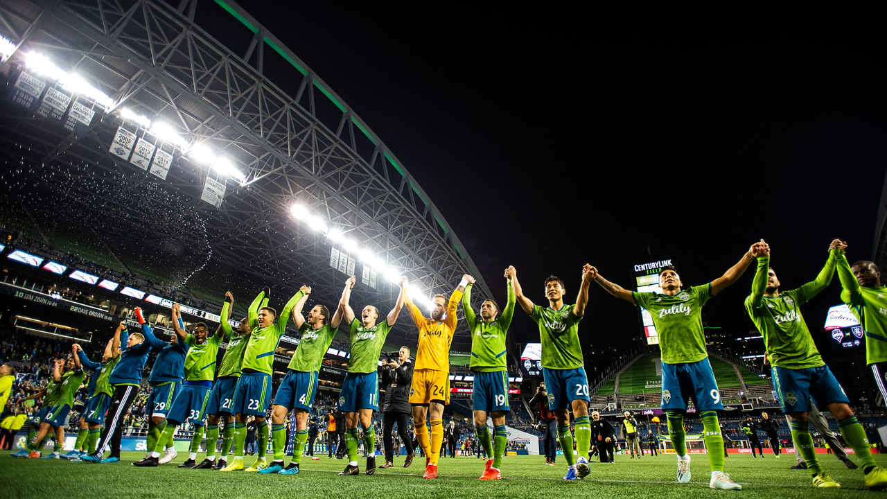

Even before the first cities in the United States were chosen to host Major League Soccer teams, Seattle was considered a viable location for a professional team. In 1994, as the U.S. was preparing to host the FIFA World Cup, more than 30 cities were pursuing the rights to an MLS team, Seattle being among them. However, despite the strong soccer fan base in Seattle, the absence of a soccer-only stadium was a drawback to establishing an MLS team. Cities seeking consideration for an inaugural MLS team were also expected to secure 10,000 assurances from fans for season tickets. By the June 3, 1994 deadline for MLS team bids, Seattle organizers had secured fewer than 1,500 such assurances. These low numbers were a result of competition between the ticket campaign for the MLS expansion team and for the American Professional Soccer League (APSL) Sounders expansion team.
In a June 14, 1994 announcement, Seattle was not included among the first seven cities to be awarded an MLS team. Five more teams were to be announced later in the year, and to improve their chances this time, Seattle MLS organizers began working with the University of Washington to secure use of Husky Stadium as an interim stadium while they pursued the construction of a permanent soccer-specific facility. In November 1994, the start of the first MLS season was postponed until 1996, and it was noted that the absence of an "adequate grass-field facility" in the area and the presence of the new APSL Seattle Sounders team had thwarted Seattle's MLS bid. In the end, Seattle was not among the cities chosen to establish a team during the first season of MLS.
In 1996, as Seattle Seahawks owner Paul Allen worked with the city to build a new football stadium for his team, the potential of an MLS expansion team that could be a co-tenant helped drive public support for the effort. Many of the state's voters supported the referendum to construct Seahawks Stadium because it was also expected to be a professional soccer venue. While the stadium problem was being resolved, a new issue emerged. By 2000, MLS was moving away from league-operated teams to investor-operated teams, so wealthy individuals would need to step forward for Seattle to obtain an MLS expansion team.
In 2003, Seattle was again listed as a possibility for an MLS expansion team when the ten-team league announced plans to expand into new markets. In 2004, MLS commissioner Don Garber indicated that Seattle had been "very close" to receiving the expansion team ultimately awarded to Salt Lake. Adrian Hanauer, then-owner of the United Soccer League's (USL) Sounders (formerly the APSL Sounders), was in discussions with MLS about an estimated payment of $1 million to secure rights to a Seattle franchise for 2006. However, when Seattle was passed over again in 2006, Hanauer announced that he would not be able to secure an expansion team without the help of more investors willing to cover the increasing MLS franchise fees which had grown beyond $10 million.